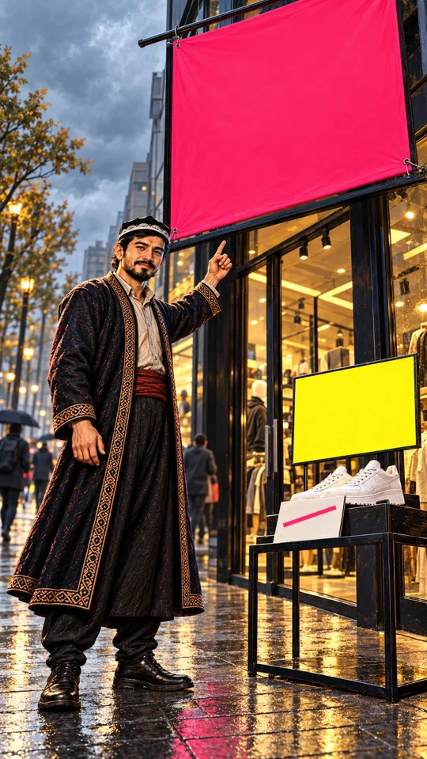

1-sahna — 9:16 (tik), 8 s
0–6 s
Ovoz
Usta: Bu 70 foizlik chegirma 70 foiz emas. To'lashdan oldin hisoblang.
Kamera: sekin yaqinlashishVertical 9:16, 8 seconds. Start from the attached image of scene 1. Camera: Slow push-in from the wide shot in the image to a medium shot of Usta from the knees up, the pink banner still above him. Action: USTA SPEAKS to the camera with a calm, knowing half-smile, his raised index finger taps twice toward the pink banner, then he turns his eyes to the viewer and lifts one eyebrow. Behind him on the left the passers-by with umbrellas keep walking away down the street. The banner, the yellow card and the white card stay blank. Dialogue: Usta says in Uzbek, in a calm deep warm male voice of about 30-35: "Bu yetmish foizlik chegirma yetmish foiz emas. To'lashdan oldin hisoblang." Continue exactly from the attached image: same place, same light, same characters in the same positions; every movement continues forward in the direction it already has in the image and never reverses, nobody walks back or re-enters the frame. Keep every character exactly as in the image for the whole clip, also when the camera comes closer: the same face, eyes, eyebrows, beard, age, hair, clothes and colours; Usta's doppi keeps its white arch embroidery; Diyor's hoodie stays dark navy blue and his cyan-blue glow stays only a thin outline, it never colours his body. Exactly two arms, two hands and five fingers on each hand per person, young smooth hands; objects stay where they are unless the action moves them, nothing shrinks, melts or disappears. Background passers-by stay small, blurred and faceless and keep walking steadily in their own direction the whole clip; light drizzle and reflections on the wet pavement. Keep the painted illustration style, the cloudy light and the colours exactly as in the image. The character who speaks in this scene talks naturally for the whole clip: lips and jaw move as in real speech, with matching small head and hand gestures; everyone else keeps the mouth closed. The dialogue is spoken in Uzbek exactly as written below, in a natural Tashkent accent; no subtitles and no on-screen text. Clothes stay plain with no print or writing. No new people in focus, no extra objects, no brand logos on shoes, phones or bags, no text, no letters, no numbers on signs, cards, screens or timers, no watermark. Only quiet street or shop ambience.